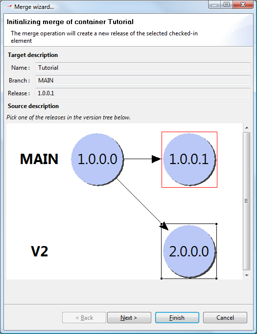
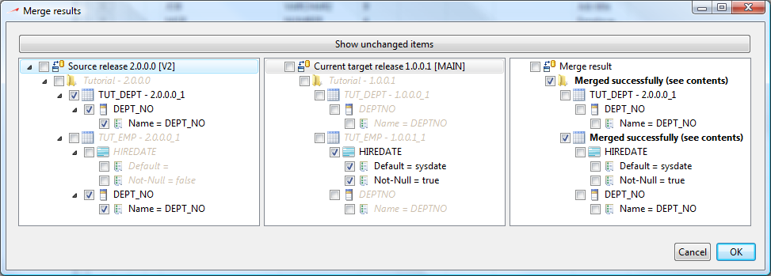

A version merge is literally a merge of 2 different versions of a same container. Merges are needed in an application lifecycle when you start to maintain several different versions in parallel. For example, as soon as you have a production release and a development release, you might need to perform merges if you have to publish a patch of your production release while developing a new release in parallel.
Note that you can only perform a merge between 2 committed container versions. This restriction had been made to ensure correct isolation of developments and merge operations.
You can merge 2 container versions by right-clicking on the container you want to merge and select the Merge to menu item. Note that the merge will always be performed in the current view. Though the current version of the container will be used as the target version of the merge.
When you click on Merge to menu item, a dialog will come up to prompt you for selecting the source version of the merge. The source version is the container version you want to integrate (merge) in the current view.

When you click process the merge computation will be performed. neXtep designer will try to automatically resolve the merge by picking the appropriate modification from one branch or another, depending on the modification time if the change on one branch is not conflicting with the other branch.
In most cases, the whole merge will be automatically resolved. An unresolved merge would leave some items in red. These items will require manual merge which consists in selecting the correct combination of changes from both source and target branches. Below is an example of the dialog window shown after starting a merge :

This dialog informs us what neXtep designer is about to do. It is important that the user checks if this seems to be correct and / or adjust the merge operations.
The left-hand tree represents elements from the source merge release which have been modified on the other branch. Selected items in this tree are the modifications that will be imported into the merged release.
The center tree represents elements from the current (target) merge release which are different from the source merge release. Checked items in this tree are the modifications that will be kept into the new merged release.
The right hand tree represents a preview of the elements if the merge is confirmed. Confirmation is made by clicking the OK button of this merge preview dialog.
Note that all other objects of the Tutorial container which are not listed here have not changed in the source release and do not need any merge operation. You can still see them by clicking the Show unchanged items button which will remove the unchanged items filter.
After merging, the view will be entirely reloaded with the new merged elements. Merged elements are check-outed to allow you to adjust the merge result, should you need to do so. Is everything is ok, you should commit the merged version to ensure proper isolation between version merge and development tasks.